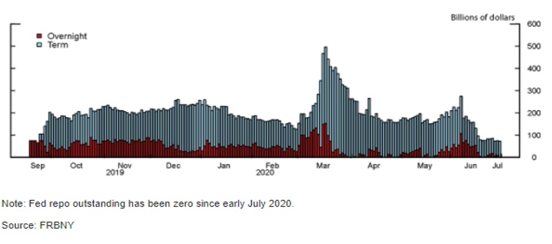

International Monetary Problems
UPEC - J. RAY
1. Introduction to monetary Problems
Currency:
- unit of account
- express value of any good
- medium of payment
- store of value
= counterpart of legal flows
History:
- barter economy
- needs „double coincidence of needs“
- storage + transportation costs
- gold currency
- large value / weight ratio
- easily divisible
- modern banking system
- expansion of debt+loans
- fiat currencies
Exchange Rate: projection of relative value against each other (currency pair)
direct quotation: price of foreign in domestic
indirect quotation: price of domestic in foreign
spot exchange rate: todays prices
forward exchange rate: quoted today, delivered later
- adjusted for inflation differentials + interest rates
Arbitrage: taking advantage of price differentials for same goo
= same prices = Purchasing Power Parity
\[ M_{i,j} = \frac{P_j}{P_i} \]
- \(M_{i,j}\) = exchange rate
- \(P_{i},P_j\) = price levels in countries
2. PPP and Monetary Regimes
Purchasing Power Parity
absolute PPP
\[ r_{i,o} = \frac{P_i}{P_j} \]
r = exchange rate
relative PPP
\[ \frac{r_{i,j}^{t}}{r_{i,j}^{t-1}} = \frac{P_j^t}{P_j^{t-1}}/\frac{P_i^j}{P_i^{t-1}} \]
allows for differential in inflation dynamics
real exchange rate
\[ r_{I,J} = q(P_{I}/ P_J) \]
with q = nominal exchange rate
Exchange Rates
Determinants in the long run:
- inflation differentials
- degree of competition
- monetary policies
- productivity differential
- higher prod = lower prices = higher PP
- Balassa-Samuelson Effect
- price of services cheaper in LDC
Short Run: (financial variables)
- return on domestic assets
- return on foreign assets
- interest rate differentials
Interest Rate Parity (IRP) \[ t_{i}= t_{j} - \frac{r_{i,j}^{t+1}-r_{ij}^{t+1}}{r_{ij}^t} \] with t = interest rates and r = exchange rates
- uncovered IRP = not taking into account exchange risk
- covered IRP = protecting with CDS
Monetary Regimes
- Fixed Exchange Rates
- maintained by CB
- pegged to basket of currencies / gold
- CB needs reserves to answer demand
- floating Exchange Rates
- dollarization = currency of another country is legal tender
- Monetary Union
- Currency Board
- domestic currency pegged to foreign currency
- restrictions on monetary authority
- e.g CFA-Franc
- Different Types of Pegs
- horizontal bands
- crawling pegs
- managed floating without predetermined path
Holy Trinity
- fixed exchange rate
- independent monetary policy
- perfect capital mobility
= choose only 2!
3. International Monetary System
IMS Requirements
- convertible currency
- capital mobility
- legal system stability
- liquidity management rules
- external imbalance arrangements (floating, CB role etc.)
Evaluation Criteria
- confidence
- stability
- ability to have independent monetary policy
- limited functional costs
- should allow balancing different goals
- internal balance: low unempl. <-> inflation
- external balance: trade equilibrium
- financial balance: no BOP crisis
Balance of Payments
Balance of Payments (BOP): statement of all transactions made by entities (between them and rest od the world)
- all types of transactions
- quantity + value of products
- balance to 0 (accounting truth)
Accounts
Current Account: all transactions in terms of goods, services, income, asset transfers
= mostly imports / exports
capital account: transactions of financial instruments / central bank reserves / monetary transfers
Exchange Rate effects (on current account)
- Volume Effect of ER ↑
- less foreign currency = less imports
- Foreigners = more domestic currency = more exports
- Value Effect: relative price of the good
Which effect dominates?
- depends on elasticity (Marshall-Lehner condition)
- higher elasticity = volume effect dominates
- lower elasticity = value effect
- J-curve:
- very short run: value effect
- slower adjustment of imp. / exp.
Reserve currencies
Reserve Currency: currency that is held in significant quanitty by CB & Institutions as part of foreign exchange reserves
- used in int. trade / transactions
- used by CB to impact ER
- asset function
Advantages
- easy international trade
- ease of borrowing in your own currency
- lower ER (not exchaning that much)
Disadvantages
- speculative bubbles
- difficulty to maintain internal / external balances (Triffin Dilemma)
- produce a lot of currency to make world happy (trouble exporting + inflation)
- or protect economy (less currency available to foreigners)
4. Covid and Central Banks
Market Liquidity
Problem: missing liquidity after Covid-Crunch, more sellers then buyers
Liquidity: efficiency to convert assets to cash
Role of CB: step up the buying of assets in crisis Problem: missing access to Dollar for foreign (central) bank
Actions of CB
- Loans + Payment Facilities (Repo) to Commercial Banks
- Quantitative Easing (Purchasing Programs etc.)
- Reduction of Reserve Requirements
- on international level: Swap Lines (e.g by FED)

Household Credit Access
Problem: - HH out of work due to Covid Lockdowns - Shutdown of Businesses due to lower Demand + Lockdowns
Actions: - lower interest rates - lower credit requirements for SME (like KFW-Kredit)
Easing the Deficit
Problem: rising Rates = higher payments = even faster debt spiraling
Actions: - lower interest rates - direct buyment programs of Gov. Bonds

5. History of the Gold Standard
Introduction - Germany 1875, - France 1878 - US 1900
First: UK = main economic power at the time
Gold-Standard
- needs constant convertibility to anyone
- at any bank (not only CB)
- No devaluation / appreciation (fixed exchange rate)
Problem:
- Inflation is determined by relative price of gold
- no influence on the price of gold of one country
- fluctuations in gold market!
Assumptions in the Gold Standard
Hume Theory
- only goal = price stability
- capital movements = adjustment mechanism (gold)
- no trade barriers: free movement of goods between countries
- participating countries = approx. same size
What happens in an current account deficit?
- gold outflow
- money supply contraction: relative price of gold ↑
- lower prices (no devaluation!)
- lower imports + more exports
Reality of the Gold Standard
- Pound Sterling = international currency
- sterling = exchangable to gold
=> gold points (exchange rate boundaries)
- barriers where own currency => gold
- is prefereable to currency => sterling
- e.g when weak currency / depreciation
Therefore:
- limit depreciation of currency
- otherwise gold would be used
Why Sterling?
- UK = biggest trader + clearing union + international financial hub
- silver = lighter than gold
- colonial / military power of the Crown
Clearing Union: Settlement / Cancellation of bilateral Balances
Failure of the Gold Standard
- WW1
- massive public spending => inflation
- exchange rate pressure
- Additional reasons
- trade barriers introduction
- different size + one hegemon (UK)
- price stability = not only focus
- downfall of the UK
- ascension of the US + Germany (and their currencies)
- Anti-colonial rise
6. History of Bretton Woods
Conference of Bretton Woods:
- July 1944 in Bretton Woods (New Hampshire)
- After-war system of monetary management
- 44 countries
Reasons for introduction
- after WW2 = growth + rebuild
- international stabilization
intended Features
- avoid competitive devaluations
- flexibility of policies for recovery
- limit capital flows
Country Positions
US:
- represented by White
- free trade (no preferential agreements)
- Esp. UK in imperial agreements
- fixed exchange rates
- one reserce currency = US dollar
- no large exchange rate movements
- monetary stabilization fond
UK:
- represented by Keynes
- adjustable exchange rates (with limits)
- country = control their international trade (protectionism etc)
- reserve currency Bancor (not USD)
- automatic adjustment
- surplus / deficits in Bancor
- only usable for int. trade
- in the system: automatic
The final System
=> End result = very close to US position
- higher economic power
- US loans to European Country
Key Parts
- USD = reserve currency
- only convertible to gold
- all other currencies = exchange to USD
- Creation of IMF = for BOP crisis
- World Bank = rebuilding effort
- GATT = free trade guarantor
Rules
- for US
- nominal anchorage
- maintain price stability
- no large deficits (healthy public finance)
- open + liquid capital market
- everyone else:
- USD as invoice currency
- maintain parity of domestic currency <–> USD
- maximum +- 1%
- adjustment only in case of fundamental disequilibrium
- current account deficit = loan from IMF
=> favorable for the US
- finance US consumption = price paid by others
- demand for treasury bills from countries
History
First 15 years = really good
- reconstruction period
- large offering of dollars by the US
- marshall plan
- European Payment Union (1950)
- clearing union between European Countries
- no trade barriers inside
- help recovery
Reasons for downfall
- US deficits (commercial & fiscal deficits)
- economic divergence
- speculative attacks
The End:
- Vietnam War Financing
- Nixon Shock (1971) : stop exchangebility to Gold
failed Projects
- gold pool = western agreement to control gold price
- Special Drawing Rights (SDR) = share of World Bank
- roosa bonds = short term bonds by US to foreign CBs